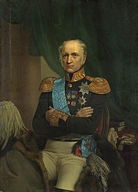

Егор Канкрин
1774-1845
Биография
Егор Францевич Канкрин (1774–1845) — русский государственный деятель немецкого происхождения. С 1797 года был на русской службе в чине надворного советника. В 1821 году был назначен членом Государственного совета, а в 1823 году — министром финансов, где и стал работать над экономическими реформами.
Являясь сторонником государственной поддержки промышленности, Канкрин значительно упростил порядок открытия новых предприятий, способствовал развитию горного и лесного дела, овцеводства, реорганизовал и улучшил систему подготовки инженерных кадров.
Главным достижением Канкрина считается денежная реформа 1839-1843 годов, которая стабилизировала российскую финансовую систему и укрепила курс рубля на международной арене.
Основные достижения
- Устав о векселях (1832)
- Денежная реформа (1839–1843)
- Первый этап — манифест «Об устройстве денежной системы» (1839–1841)
- Второй этап — манифест «О выпуске в обращение кредитных билетов» (1841)
- Третий этап — манифест «О замене ассигнаций и других денежных представительств» (1843)